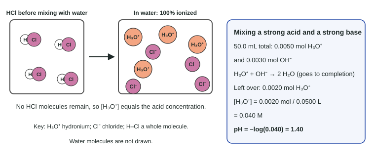

pH and pOH of Strong Acids and Bases
Strong acids and strong bases ionize fully, so [H₃O⁺] or [OH⁻] comes straight from the concentration (doubled for hydroxides such as Ba(OH)₂).
Part 1 · Hook
Why this matters
Part 2 · Before you start
What this builds on
Part 3 · Prerequisite check
Quick check before you start
1. What is the pH of a solution with [H₃O⁺] = 1.0 × 10⁻³ M?
- 3.00
- 11.00
- −3.00
- 0.0010
Show the answer
pH = −log(1.0 × 10⁻³) = 3.00.
- Correct: 3.00:
- 11.00:
- −3.00:
- 0.0010:
2. How many moles of solute are in 25.0 mL of 0.200 M solution?
- 0.00500 mol
- 5.00 mol
- 0.125 mol
- 0.0080 mol
Show the answer
Moles = 0.0250 L × 0.200 mol/L = 0.00500 mol. Convert mL to L first.
- Correct: 0.00500 mol:
- 5.00 mol:
- 0.125 mol:
- 0.0080 mol:
3. In a net ionic equation for HCl(aq) + NaOH(aq), which ions are spectators?
- Na⁺ and Cl⁻
- H₃O⁺ and OH⁻
- H₃O⁺ and Cl⁻
- Na⁺ and OH⁻
Show the answer
The net reaction is H₃O⁺ + OH⁻ → 2 H₂O; Na⁺ and Cl⁻ are unchanged.
- Correct: Na⁺ and Cl⁻:
- H₃O⁺ and OH⁻:
- H₃O⁺ and Cl⁻:
- Na⁺ and OH⁻:
Part 4 · See it
See it first

Part 5 · Step by step
How it works, step by step
- A strong acid gives its proton to water essentially every timeno acid molecules remain, and [H₃O⁺] equals the acid concentration
- A strong base such as Ba(OH)₂ dissociates fully[OH⁻] equals the base concentration times the OH⁻ per formula unit
- H₃O⁺ and OH⁻ react to form water whenever they meetmixing strong acid and strong base leaves only the excess of whichever had more moles
- The excess is spread through the whole mixed volumeits concentration, and then the pH, comes from the excess moles over the total volume
Part 6 · Key ideas
Key ideas
- Strong acids: HCl, HBr, HI, HNO₃, HClO₄, H₂SO₄ (first proton). Strong bases: group 1 hydroxides, Ca(OH)₂, Sr(OH)₂, Ba(OH)₂.
- Strong acid: [H₃O⁺] = C. Strong base: [OH⁻] = C × (number of OH⁻ per formula unit), then pOH, then pH.
- Mixing: moles first, subtract, divide the excess by the total volume, then take the log.
- At equivalence, strong acid + strong base gives a neutral salt solution: pH 7.00 at 25 °C.
Part 7 · Misconception
A common mistake
The wrong idea: A 1.0 × 10⁻⁸ M HCl solution has pH 8.
What actually happens: An acid cannot make water basic. At that tiny concentration, water's own 1.0 × 10⁻⁷ M H₃O⁺ is larger than the acid's, so the pH is just under 7 (about 6.98).
Part 8 · Check yourself
Check yourself
Exam-style questions. Anything you miss goes into your review queue.
Data table
Four stock solutions
A prep room stocks these solutions at 25 °C. Each solute is a strong acid or a strong base.
| Bottle | Solute | Concentration (M) |
|---|---|---|
| 1 | HNO₃ | 0.0250 |
| 2 | Ba(OH)₂ | 0.0150 |
| 3 | KOH | 0.0040 |
| 4 | HCl | 1.0 × 10⁻⁸ |
1. What is the pH of Bottle 1?
Type a number.
Show the answer
HNO₃ ionizes fully, so [H₃O⁺] = 0.0250 M. pH = −log(0.0250) = 1.6021, which is 1.602: three significant figures in the concentration give three decimal places.
- Answer: 1.602
2. What is the pH of Bottle 2?
Type a number.
Show the answer
Ba(OH)₂ → Ba²⁺ + 2 OH⁻, so [OH⁻] = 2 × 0.0150 = 0.0300 M. pOH = −log(0.0300) = 1.5229; pH = 14.000 − 1.523 = 12.477.
- Answer: 12.477
3. Which bottle has the highest pH?
- Bottle 2
- Bottle 3
- Bottle 4
- Bottle 1
Show the answer
The highest pH goes with the highest [OH⁻]. Bottle 2 has 0.0300 M OH⁻ (pH 12.48); Bottle 3 has 0.0040 M (pH 11.60).
- Correct: Bottle 2: Right: two OH⁻ per formula unit makes its [OH⁻] the largest.
- Bottle 3: KOH gives one OH⁻ per formula unit, so [OH⁻] = 0.0040 M, less than Bottle 2's 0.0300 M.
- Bottle 4: A very dilute HCl solution is still slightly acidic; its pH is just under 7, not 8.
- Bottle 1: Bottle 1 is an acid, so its pH is the lowest of the four.
Experimental setup
Mixing an acid and a base
A student adds 15.0 mL of 0.150 M NaOH to 25.0 mL of 0.120 M HCl in a flask and swirls. Assume the volumes add and the temperature is 25 °C.
4. How many moles of H₃O⁺ are left over after the reaction?
Type a number in mol.
Show the answer
HCl: 0.0250 L × 0.120 mol/L = 0.00300 mol H₃O⁺. NaOH: 0.0150 L × 0.150 mol/L = 0.00225 mol OH⁻. They react 1:1, leaving 0.00300 − 0.00225 = 7.5 × 10⁻⁴ mol H₃O⁺. Both amounts are known to the 0.00001 mol place, so the difference, 0.00075 mol, has two significant figures.
- Answer: 7.5 × 10-4 mol
5. What is the pH of the mixture?
Type a number.
Show the answer
[H₃O⁺] = 7.5 × 10⁻⁴ mol / 0.0400 L = 0.0188 M. pH = −log(0.0188) = 1.727, which is 1.73 (two significant figures in the leftover moles).
- Answer: 1.73
Particle view
Four mixtures of HCl and NaOH
Key: H₃O⁺ hydronium; OH⁻ hydroxide; Na⁺ sodium ion; Cl⁻ chloride ion. Water molecules are not drawn; at this scale the H₃O⁺ and OH⁻ from water itself are too few to show.
6. Five HCl and three NaOH formula units were mixed. Which box shows the result?
- W
- X
- Y
- Z
Show the answer
Five HCl give 5 H₃O⁺ and 5 Cl⁻; three NaOH give 3 Na⁺ and 3 OH⁻. Three H₃O⁺ react with the three OH⁻, leaving 2 H₃O⁺, 5 Cl⁻ and 3 Na⁺: Box W.
- Correct: W: Right: 2 H₃O⁺ left over, and the spectator ions keep their counts.
- X: Box X is the equivalence point: equal numbers of acid and base.
- Y: Box Y has excess OH⁻, which needs more NaOH than HCl.
- Z: H₃O⁺ and OH⁻ cannot stay side by side in these amounts: they react until one is used up.
7. Which box cannot represent a real mixture, and why?
- Z, because H₃O⁺ and OH⁻ would react until one of them was nearly gone
- X, because a solution needs H₃O⁺ ions to conduct electricity
- Y, because there are more Na⁺ ions than Cl⁻ ions
- W, because there are more Cl⁻ ions than Na⁺ ions
Show the answer
Kw = [H₃O⁺][OH⁻] = 1.0 × 10⁻¹⁴ is tiny, so large amounts of both ions cannot coexist. They react to make water until the product falls to Kw.
- Correct: Z, because H₃O⁺ and OH⁻ would react until one of them was nearly gone: Right: neutralization goes essentially to completion.
- X, because a solution needs H₃O⁺ ions to conduct electricity: Na⁺ and Cl⁻ conduct electricity on their own; X is a neutral salt solution.
- Y, because there are more Na⁺ ions than Cl⁻ ions: Excess NaOH gives more Na⁺ than Cl⁻; Y is a real mixture with base left over.
- W, because there are more Cl⁻ ions than Na⁺ ions: Excess HCl gives more Cl⁻ than Na⁺; W is a real mixture with acid left over.
Part 9 · Summary
Summary
Part 10 · Up next
What comes next
Part 11 · Connections